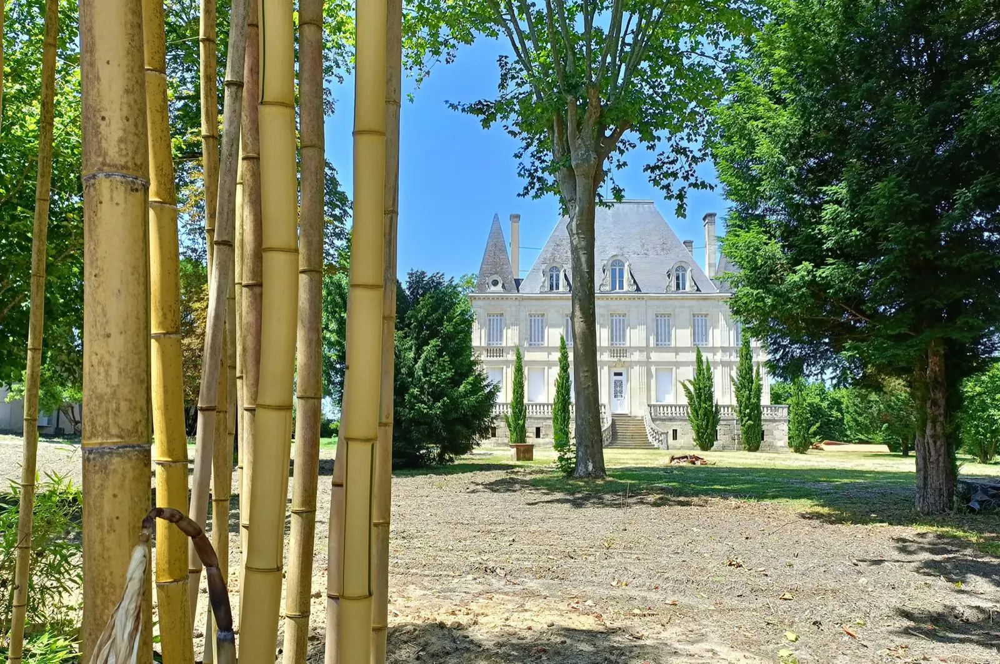
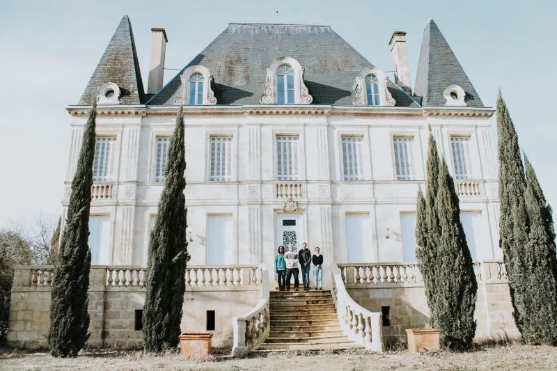
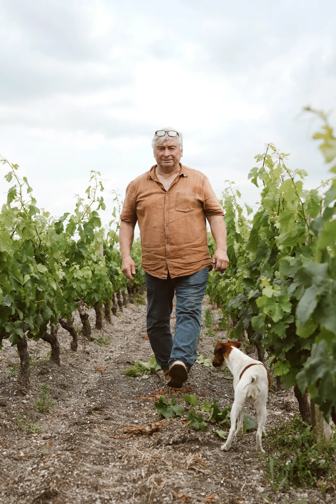
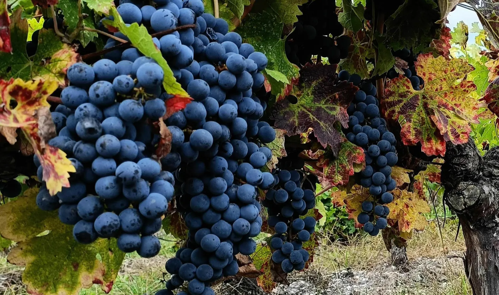
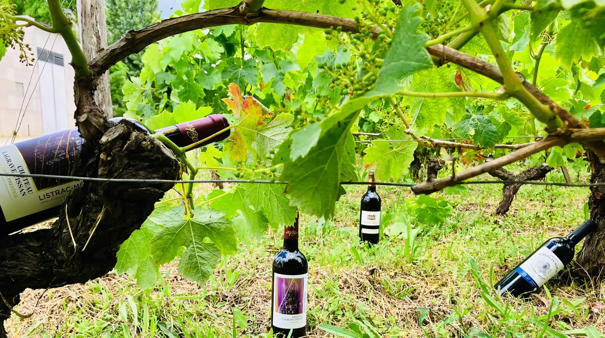
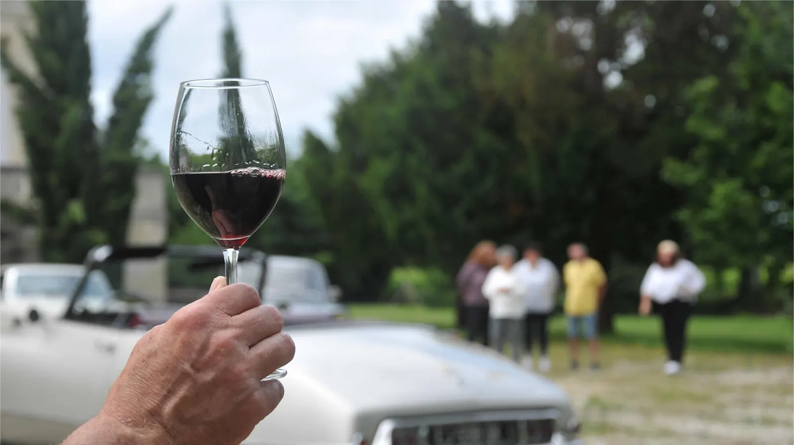
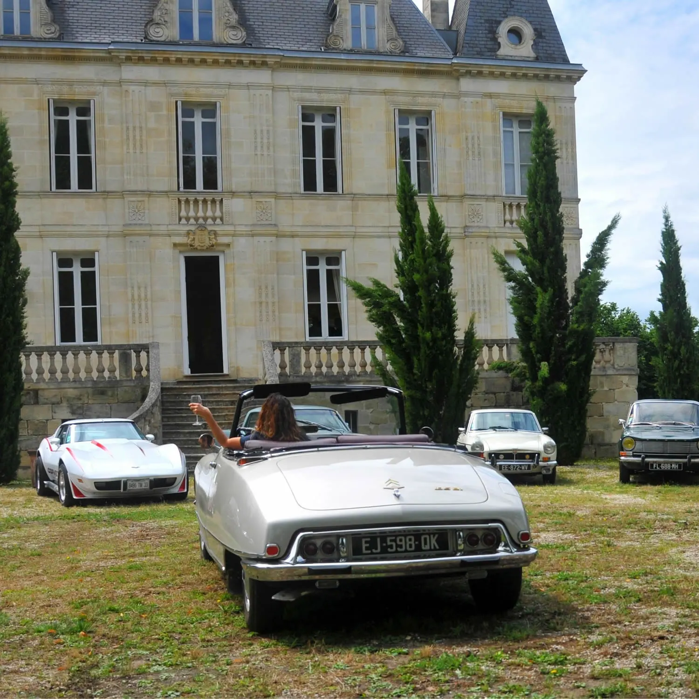

En 2021, Pierre Jean Denis Bibian acquiert les vignobles du Château Sémeillan Mazeau et du Château Lagrave Cissan, et la bâtisse historique du Château Listrac, construite en 1875. Avec un engagement profond envers l’art et l’environnement, il produit des vins qui respectent la saisonnalité et l’authenticité de chaque millésime.
- 3 châteauxSémeillan Mazeau, Lagrave Cissan, Jander
- 2015première propriété certifiée bio de l’appellation Listrac-Médoc
- 11 haenviron à Sémeillan Mazeau, sur les plateaux graveleux
- 4 terroirsargilo-calcaire, graves profondes, sur argile bleue, sur alios
- 15 à 50 ansl’âge des vignes, pour une diversité de caractères


Une propriété au cœur du Médoc.
Produisant des vins biologiques, le domaine préserve la vie des sols et adapte chaque vinification aux particularités de chaque millésime.
Il accueille les artistes locaux, qui exposent leurs œuvres dans le chai, et offre aux enfants de la région de découvrir les vendanges et la vinification, en les initiant à l’art par la peinture des barriques.
- 1925Le Château Sémeillan, après avoir appartenu à la vicomtesse du Pavillon, devient la propriété de M. P. A. Hosten.
- 1938Le domaine est partagé entre ses trois filles ; il est rebaptisé Château Sémeillan Mazeau.
- 1998M. Jander et son épouse l’acquièrent et entreprennent sa restauration.
- 2021Pierre Jean Denis Bibian retourne à ses racines médocaines et acquiert Sémeillan Mazeau et Lagrave Cissan.

« Chaque année, le vigneron compose une œuvre subtile et éphémère à partir des fruits de la terre, une création qui débute sous sa main experte et s’achève entre les mains du client, au moment où celui-ci ouvre la bouteille. »
Pierre Jean Denis Bibian
Gérant, viticulteur et maître de chai. Héritier d’une famille vigneronne listracaise, il surveille ses vins, évalue leur évolution, les analyse et les assemble avec précision avant de les mettre en bouteille.
Léontine Bibian
Elle a embarqué dans l’aventure viticole aux côtés de son mari. Passionnée de nature, de soleil et même de moutons, elle bichonne les vins au chai et les pare de leurs plus beaux atours.
Quatre terroirs, trois cépages.
Sur ces différents sols, le domaine cultive les cépages emblématiques de la région : le merlot, le cabernet sauvignon, et le petit verdot, cépage de caractère originaire du Médoc.
Argilo-calcaire
Ce sol donne naissance à des vins charpentés, robustes et intensément colorés.
Graves profondes
Ici, les vins fins trouvent leur élégance, notamment avec le cabernet sauvignon.
Graves sur argile bleue
Ce terroir favorise la fraîcheur et protège les vignes des excès de chaleur.
Graves sur alios
Ce sol vient compléter la complexité des autres terroirs.

Au chai, l’objectif : des vins où l’équilibre se traduit par une symphonie d’arômes fruités, de tannins veloutés et d’une légère touche boisée, qui ne domine jamais les autres nuances du vin.
Cave en ligne

Le Petit Verdot 2021
18,00 €AOC Listrac-Médoc. Une cuvée confidentielle et singulière, issue à 100 % de ce cépage emblématique du Médoc.
Découvrir la cuvéeChâteau Sémeillan MazeauCru Bourgeois, AOC Listrac-Médoc
- 202116,50 €
- 201917,50 €
Château Lagrave CissanCuvée Prestige 2021
- AOC Listrac-Médoc14,00 €
- AOC Haut-Médoc12,00 €
Château JanderAOC Moulis-en-Médoc
- 201815,00 €
- 201615,00 €
- 201515,00 €
Visite et dégustation au domaine.
Pierre Jean Denis Bibian vous invite à découvrir sa passion et son métier de vigneron. Explorez le cuvier et le chai à barriques, les étapes de fabrication d’un grand vin, puis savourez nos cuvées lors d’une dégustation.
Sur rendez-vous, réservation recommandéeDégustation horizontale, Château Lagrave Cissan
1 h 30Deux vins du même millésime, en AOC Haut-Médoc et Listrac-Médoc : jeunes, fruités, légers, mais de terroirs et d’assemblages différents. Curieux de voir comment 3 % de petit verdot peut changer votre dégustation ?
Dégustation verticale, Château Sémeillan Mazeau
1 h 30L’AOC Listrac-Médoc sur trois millésimes.
Dégustation verticale, Château Jander
1 h 30L’AOC Moulis-en-Médoc sur trois millésimes, pour les amateurs de vins bien vieillis aux tanins soyeux.

Au fil de l’année
- Peintures et sculptures
- Des expositions d’artistes locaux, mises en scène dans notre chai en forme d’amphithéâtre.
- Voitures anciennes
- Des passionnés exposent leurs trésors d’antan devant le domaine.
- Vendanges avec les enfants
- Chaque année, les jeunes apprennent les secrets des vendanges et peignent les barriques.
